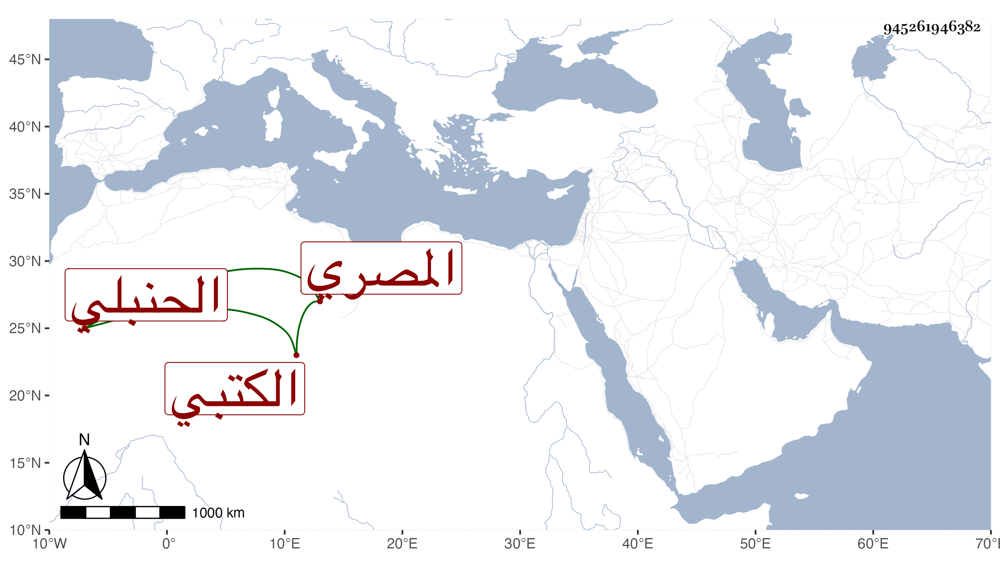

0902Sakhawi.DawLamic.ITO20230111-ara1.EIS1600.945261946382
Biography ID: 945261946382
830
علي بن عبد الكريم بن إبراهيم بن أحمد نور الدين بن كريم الدين المصري الحنبلي الكتبي الماضي أبوه ويعرف بابن عبد الكريم . سمع على التنوخي والأبناسي وابن حاتم وابن الخشاب وابن الشيخة والمجد إسماعيل الحنفي والشهاب الجوهري في أخرة ، وذكره شيخنا في إنبائه فقال أنه كان عارفا بالكتب وأثمانها ولكنه تشاغل عن التكسب بها غالبا بغيرها بل ناب في الحكم مدة ثم ترك . ومات بعد أن تعلل عدة سنين في سنة اثنتين واربعين وقد قارب السبعين أو جازها .
